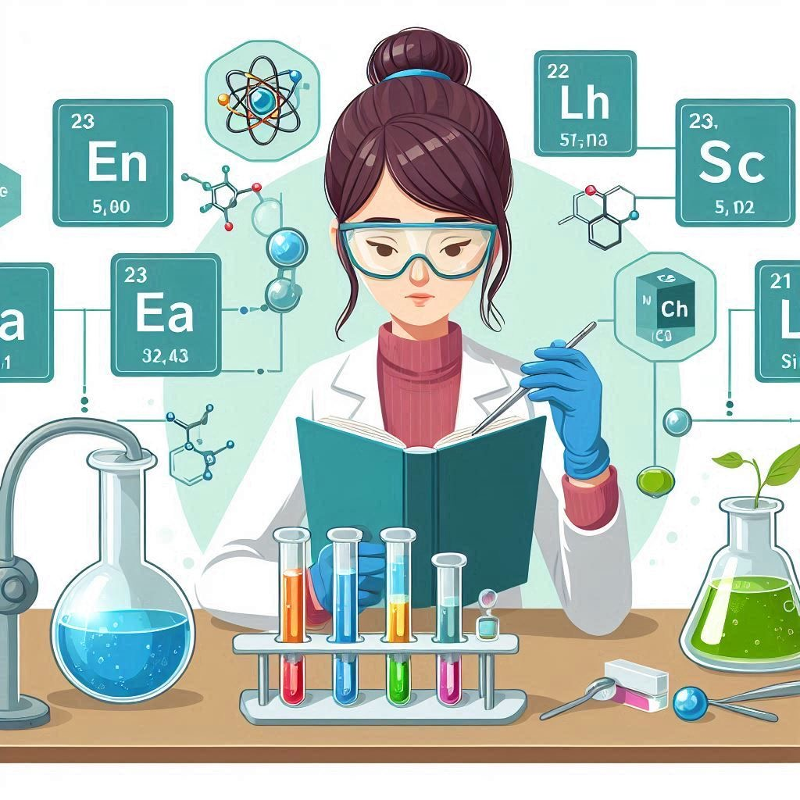
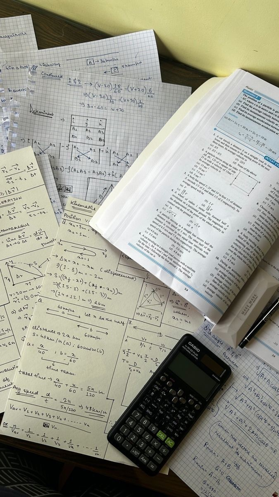
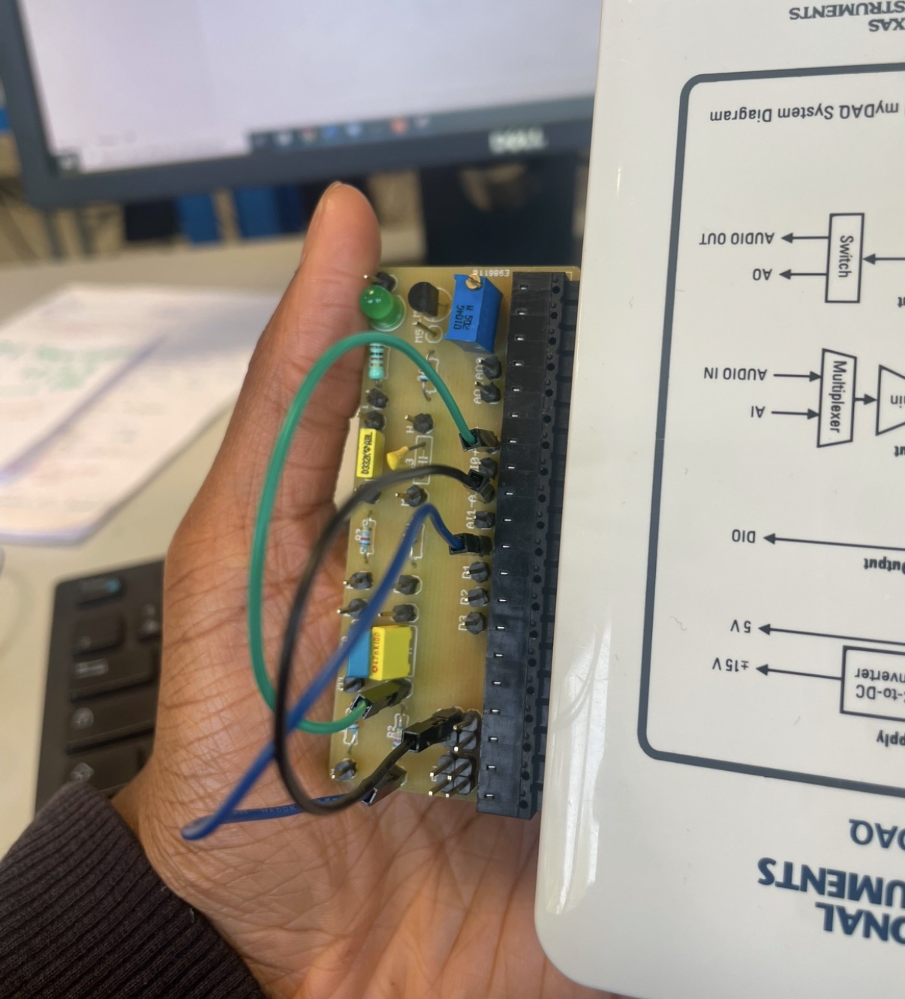
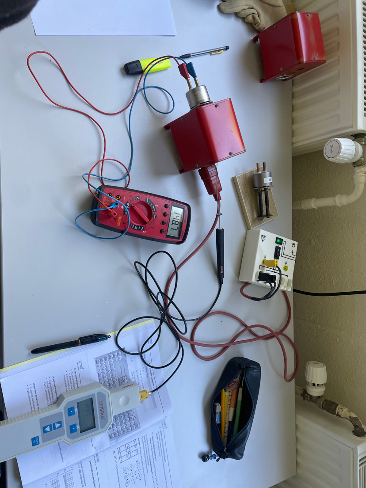
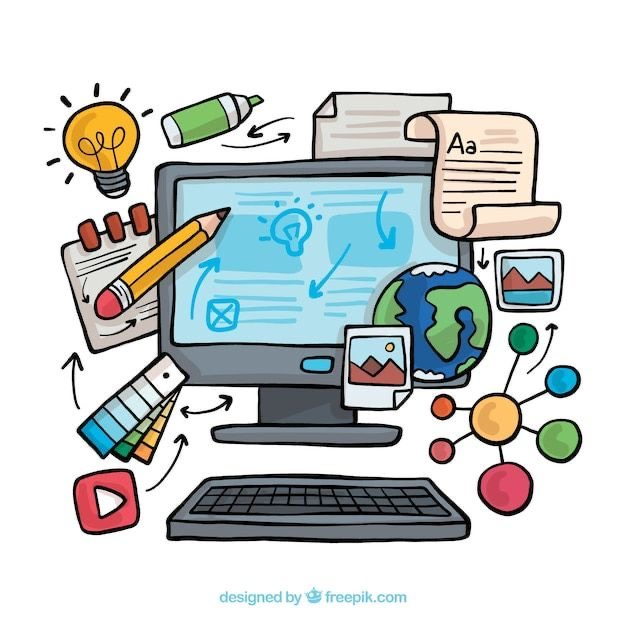
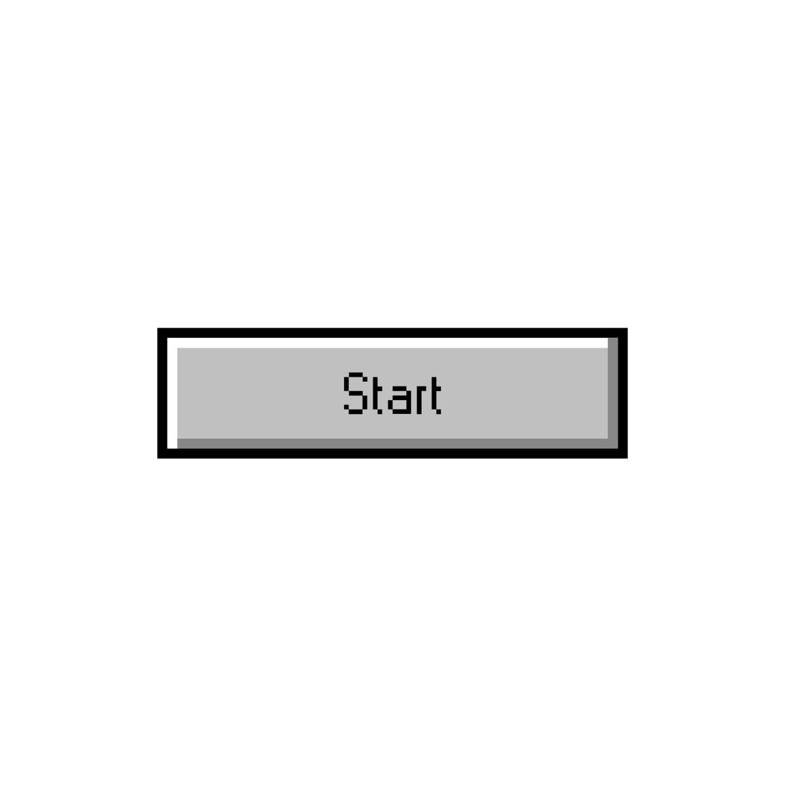
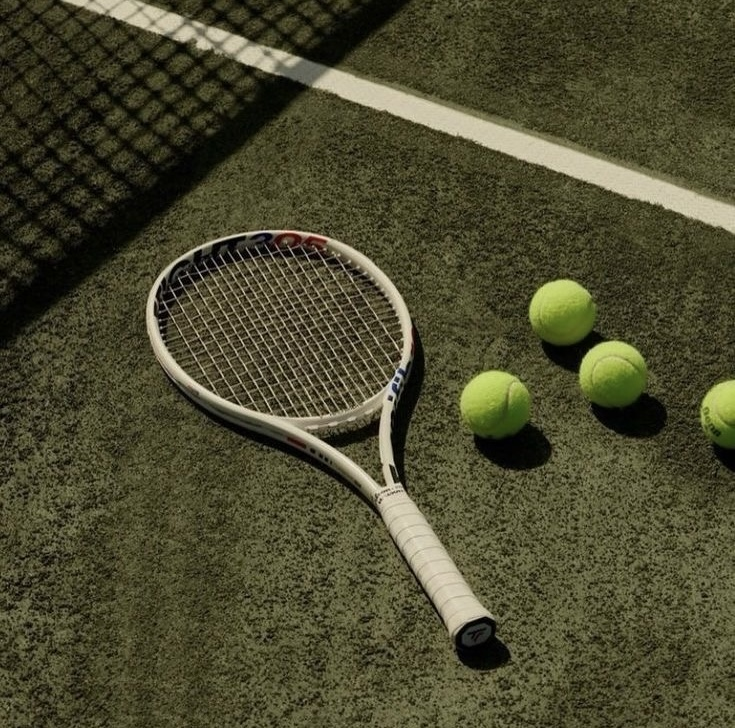
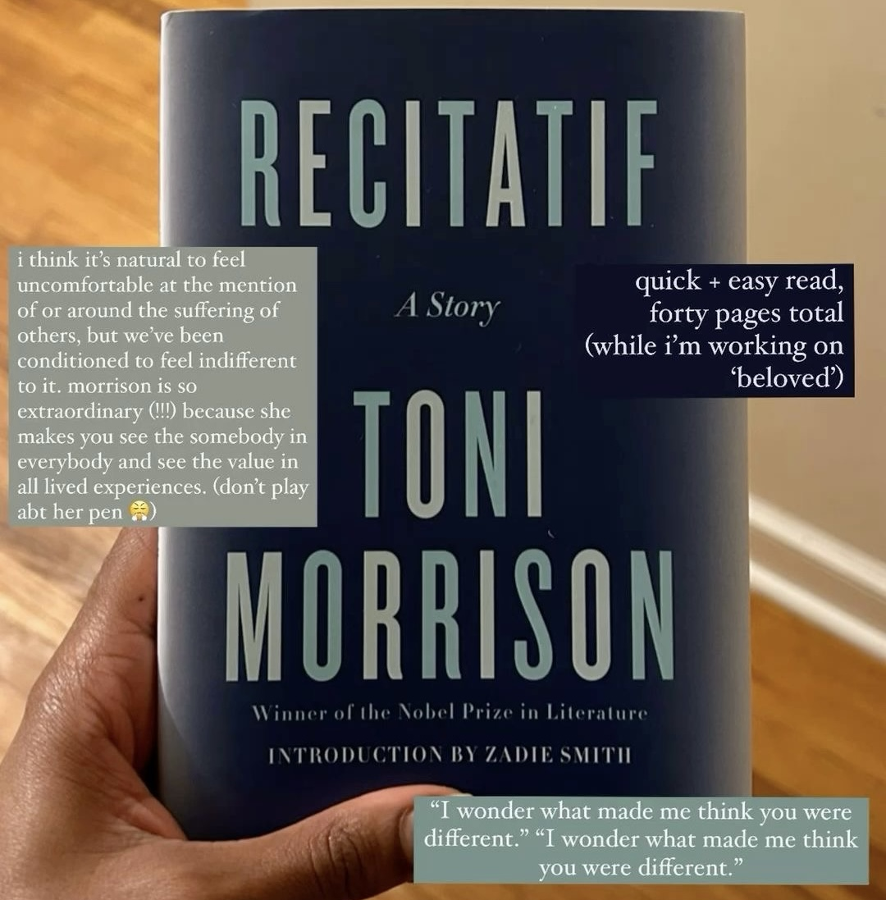
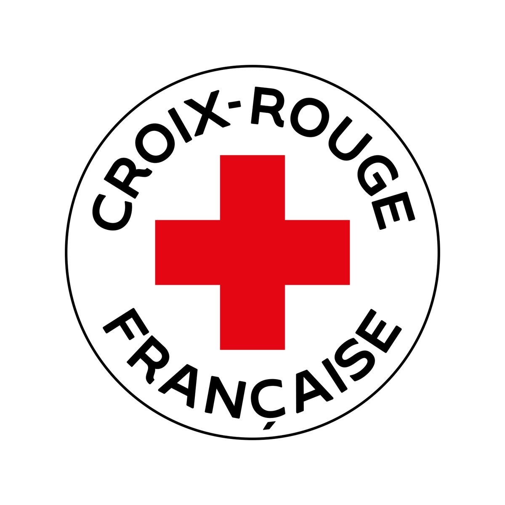

Mon Parcours Académique
Baccalauréat Général - 2025
Mathématiques, Physique-Chimie et option Maths Expertes.


BUT Mesures Physiques - 2025/2026
Université Paris-Saclay, IUT d'Orsay.
Cette année en BUT Mesures Physiques m'a permis de consolider mes bases scientifiques et ma rigueur analytique. J'y ai découvert que ce qui me passionnait le plus n'était pas l'expérience physique en soi, mais le traitement de données et la modélisation informatique. J'ai donc choisi de me réorienter en Informatique pour me concentrer sur la création d'outils et le développement logiciel.


BUT Informatique (2025-Actuel)
Université Paris-Saclay, IUT d'Orsay.
Aujourd'hui pleinement épanoui en BUT Informatique, j'ai trouvé un équilibre parfait entre théorie et mise en pratique. Cette formation confirme mon attrait pour la résolution de problèmes complexes et la conception logicielle. Qu'il s'agisse de développement, de gestion de bases de données ou d'architecture système, j'aborde chaque projet avec une grande curiosité et l'envie d'approfondir mes compétences techniques. Je suis désormais impatient de mobiliser cette énergie et ce savoir-faire au sein d'une entreprise dans le cadre de mon alternance.


Mes Compétences
Compétences Techniques
Développement Web
Programmation
Data & Systèmes
Méthodologie
Qualités Humaines
Centres d'intérêt

Le Tennis
Sport qui m'a appris la persévérance et la discipline.

Littérature Anglophone
Passion qui nourrit ma curiosité et mon niveau d'anglais.

Engagement Associatif
Bénévole aux Restos du Cœur et à "Les Chelles de l'espoir". Coach sportif au foot.